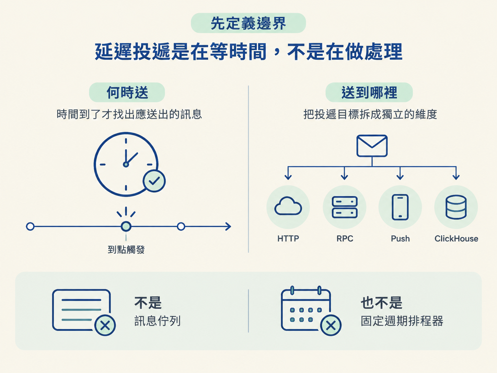
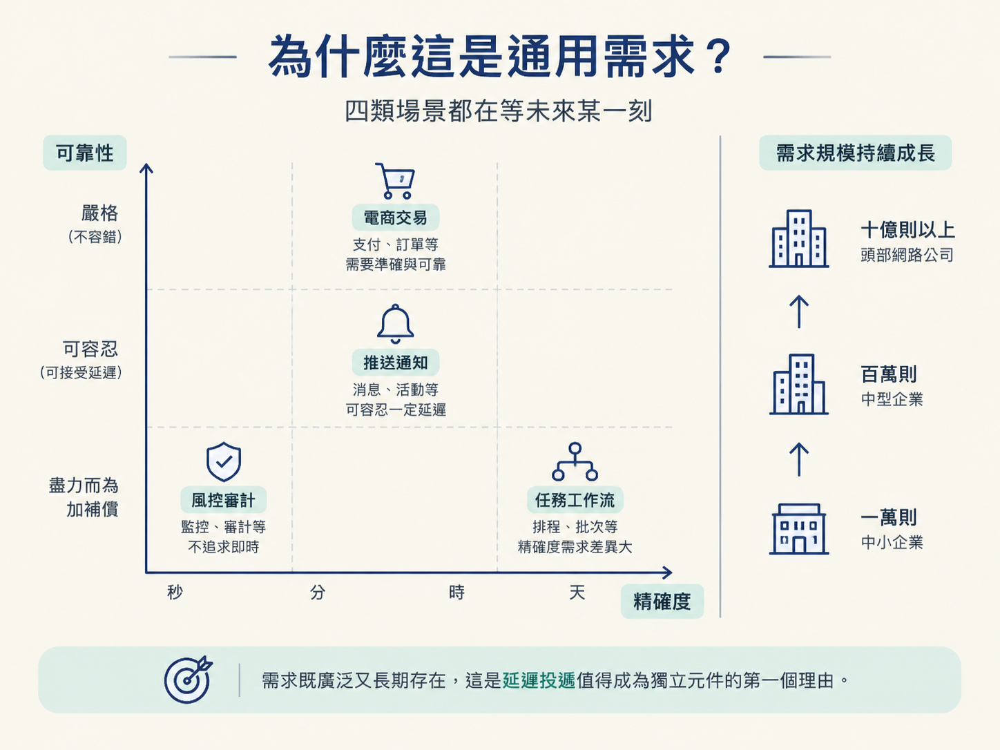
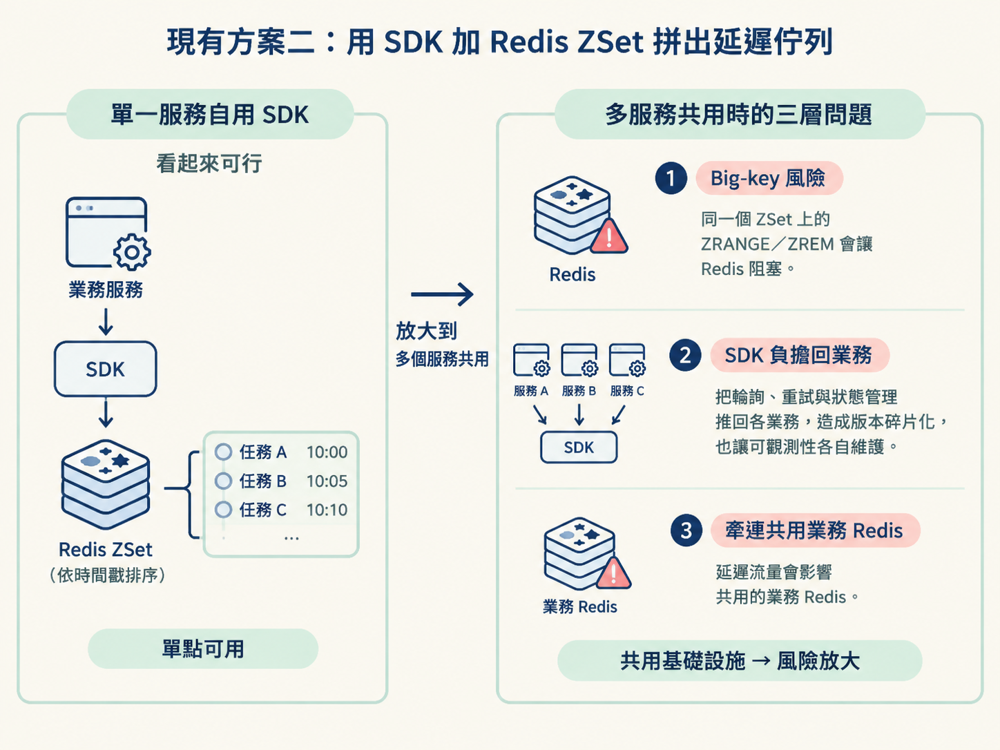
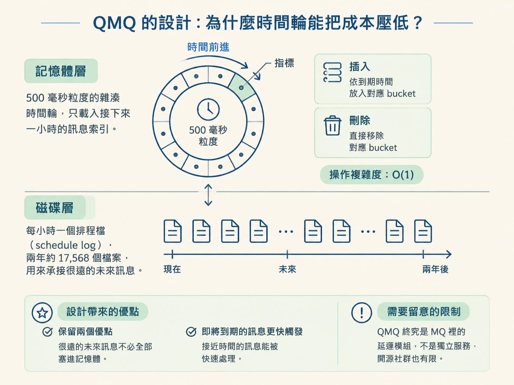
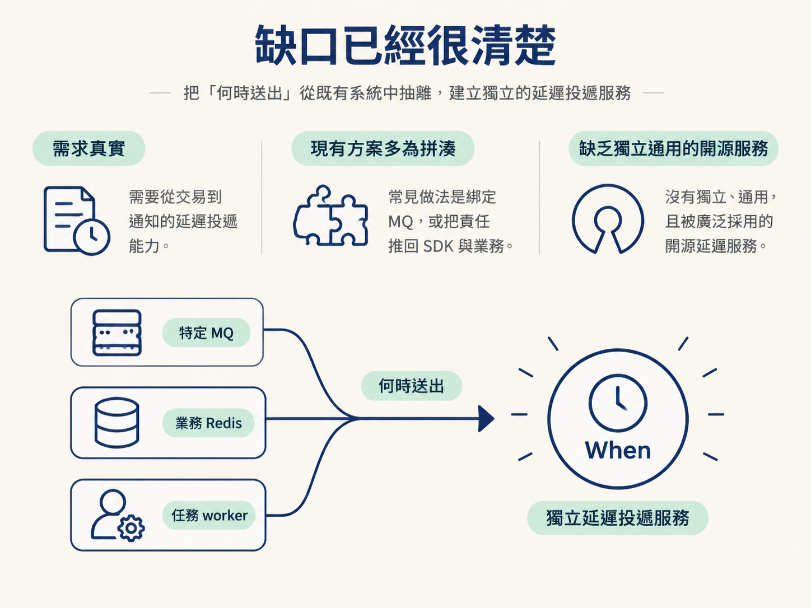

延遲投遞（delayed delivery）指的是：先記住一則訊息，等到指定時間，再把它送到下游。
它解決的核心問題不是「這則訊息要怎麼處理」，而是「什麼時候才送出去」。因此，系統至少要處理兩件事：
第二點決定了它的邊界。延遲投遞不是單純的訊息佇列，也不是固定週期的排程器；它是一個把「時間」與「投遞目標」拆開處理的元件。

凡是「現在先記下來，未來再做某件事」的業務，都可能需要延遲投遞：
| 場景類型 | 典型例子 | 精確度／可靠性要求 |
|---|---|---|
| 電商／交易 | 訂單逾時取消、優惠券到期、退款逾時、團購結算 | 精確度中，可靠性嚴格 |
| 推送／通知 | 定時推送、喚醒提醒 | 精確度中，可靠性可容忍 |
| 任務／工作流 | 指數退避重試、定時報表、對帳、審批逾時 | 精確度分級差異大 |
| 風控／審計 | 延遲結算、閾值觸發規則、歸檔 | 精確度低，盡力而為加補償 |
其他例子還包括會議提醒、IoT 喚醒，以及 A/B 測試中的延遲效果。
這些需求的差異，主要落在兩個軸線：
規模也可以從中小企業每天一萬到一百萬則，延伸到頭部網路公司每天十億則以上。需求既廣泛又長期存在，這是延遲投遞值得成為獨立元件的第一個理由。

最直覺的做法，是直接使用 MQ 的延遲訊息功能。但這條路的問題是：延遲能力通常和特定 MQ 綁在一起，而且不同產品的實作差異很大。
共同缺口在於投遞目標被 MQ 綁住。真實業務的下游可能是 HTTP、RPC、Push 或 ClickHouse，企業也可能同時使用多個 MQ。若延遲能力只是某個 MQ 的附屬功能，系統就很難把「何時送」和「送到哪裡」分開。
另一種做法是使用 SDK，在 Redis ZSet 裡以時間戳記排序訊息。例如：
這類方案適合快速補上小規模需求，但一旦變成共用基礎設施，就會遇到三層問題。
ZRANGE 或 ZREM 可能讓 Redis 阻塞數百毫秒。分片可以緩解，但不能消除這個模型本身的限制。因此，SDK 解決的是「某個服務需要延遲佇列」；它還沒有解決「多個服務共用一套可靠、可觀測、與業務 Redis 隔離的延遲基礎設施」。

既然 MQ 綁定太深、SDK 又把複雜度推給業務，業界也曾嘗試打造獨立服務，但各自都有明顯限制：
| 嘗試 | 做法 | 沒有普及的原因 |
|---|---|---|
| Airbnb Dynein | 將調度與佇列分離，部署在 K8s 上並採無狀態設計 | 綁定 AWS、使用 Java／Dropwizard 老堆疊，社群逐漸停滯 |
| Netflix Dyno-queues | 綁定 Dynomite | 生態較冷，依賴特定基礎設施 |
| 滴滴 DDMQ + Chronos | 使用 RocksDB 儲存引擎與時間輪 | 堆疊很深，包含 PProxy、RocketMQ、Chronos、RocksDB；同時綁定 RocketMQ，社群活躍度低 |
業界最受認可的延遲設計之一，是去哪兒的 QMQ。
QMQ 把時間跨度很大的訊息拆成兩層：
時間輪可以想成一個有固定刻度的圓盤：每個刻度是一個 bucket，指標隨時間向前走。插入訊息時，只要依照到期時間找到對應 bucket；刪除時，也只需要從該 bucket 移除，不必重新掃描全部訊息。這就是它能讓插入與刪除達到 O(1) 的原因。
這種設計同時保留了兩個優點：很遠的未來訊息不必全部塞進記憶體，而即將到期的訊息又能快速被觸發。只是 QMQ 終究是 MQ 裡的延遲模組，不是獨立服務，開源社群也有限。

看起來相似的系統，核心責任其實不同：
例如，「每天凌晨一點產生報表」是任務調度；「付款失敗後 30 秒重試」則是延遲投遞。兩者都和時間有關，但觸發模型不同，不能直接互相取代。
雲端託管服務如 AWS EventBridge Scheduler、GCP Cloud Tasks，在小規模場景可能便宜又方便；但它們綁定特定雲端，投遞目標也受到限制，因此不適合多數私有部署或同時使用多種下游的企業。
把需求、現有方案與演算法設計放在一起看，可以得到三個判斷：
這個空位，就是 When 存在的理由：把「何時送出」從特定 MQ、業務 Redis 與任務 worker 中抽離，做成獨立的延遲投遞服務。
